Fish, old boots, squid, a log raft and its paddle. Review the shapes and style together; use the resource and frame numbers to flag any exceptions.
Drawings are enlarged to fit each card. Their final scene size and how they meet Johnny's hands and mouth will be checked during bulk integration. The original colors are diagnostic; the shapes guide these redraws.
Loading drawings...
Fish and the separate tail
Fish poseFIRE2.BMP-001
Click the drawing to open its full image.Compare original FIRE2.BMP-001
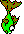
Fish poseFIRE2.BMP-002
Click the drawing to open its full image.Compare original FIRE2.BMP-002
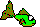
Fish poseFIRE2.BMP-012
Click the drawing to open its full image.Compare original FIRE2.BMP-012
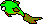
Fish poseFIRE2.BMP-013
Click the drawing to open its full image.Compare original FIRE2.BMP-013
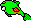
Fish poseFIRE2.BMP-014
Click the drawing to open its full image.Compare original FIRE2.BMP-014
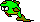
Fish poseFIRE2.BMP-017
Click the drawing to open its full image.Compare original FIRE2.BMP-017
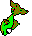
Separate tailFIRE2.BMP-018
This is a separate piece, not a complete prop.Compare original FIRE2.BMP-018
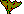
Fish poseFIRE2.BMP-020
Click the drawing to open its full image.Compare original FIRE2.BMP-020
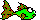
Companion source variantFIRE5.BMP-002
Source variant; scene usage still unconfirmed.Compare original FIRE5.BMP-002
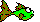
Old boots and the separate toe
Boot poseFIRE2.BMP-004
Click the drawing to open its full image.Compare original FIRE2.BMP-004
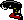
Boot poseFIRE2.BMP-005
Click the drawing to open its full image.Compare original FIRE2.BMP-005
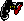
Boot poseFIRE2.BMP-009
Click the drawing to open its full image.Compare original FIRE2.BMP-009
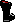
Boot poseFIRE2.BMP-015
Click the drawing to open its full image.Compare original FIRE2.BMP-015
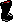
Boot poseFIRE2.BMP-016
Click the drawing to open its full image.Compare original FIRE2.BMP-016
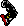
Separate toe / soleFIRE2.BMP-019
This is a separate piece, not a complete prop.Compare original FIRE2.BMP-019Boot poseFIRE2.BMP-022
Click the drawing to open its full image.Compare original FIRE2.BMP-022Boot poseFIRE2.BMP-023
Click the drawing to open its full image.Compare original FIRE2.BMP-023
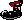
Companion source variantFIRE5.BMP-001
Source variant; scene usage still unconfirmed.Compare original FIRE5.BMP-001
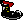
Squid poses
Squid poseFIRE2.BMP-006
Click the drawing to open its full image.Compare original FIRE2.BMP-006
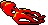
Squid poseFIRE2.BMP-007
Click the drawing to open its full image.Compare original FIRE2.BMP-007
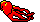
Curled eating poseFIRE2.BMP-021
Click the drawing to open its full image.Compare original FIRE2.BMP-021
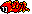
Curled eating poseFIRE2.BMP-024
Click the drawing to open its full image.Compare original FIRE2.BMP-024Companion source variantFIRE5.BMP-000
Source variant; scene usage still unconfirmed.Compare original FIRE5.BMP-000
Raft and paddle
Log raftSRAFT.BMP-000
Click the drawing to open its full image.Compare original SRAFT.BMP-000
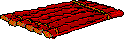
Wooden paddleSRAFT.BMP-001
Click the drawing to open its full image.Compare original SRAFT.BMP-001